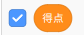
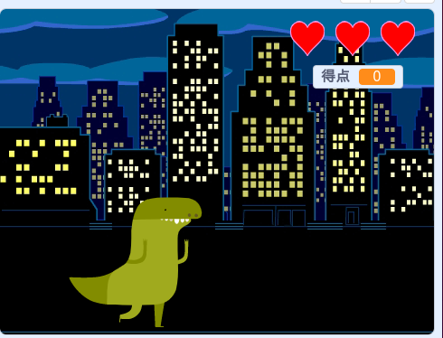
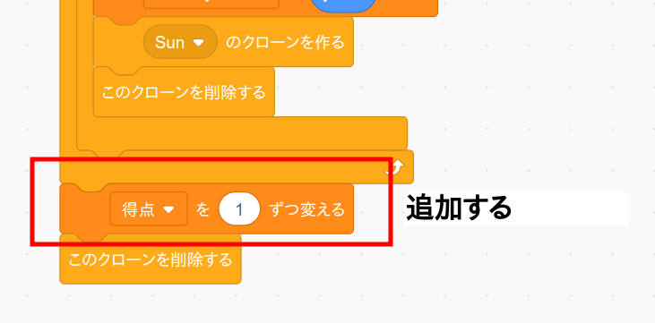
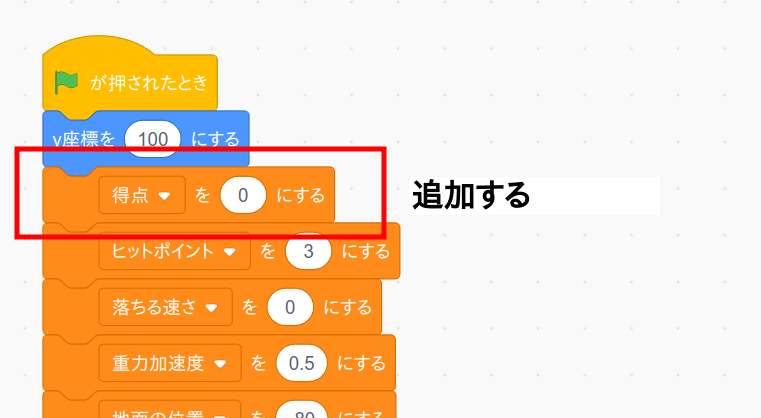

では最後の仕上げとして得点を表示してみましょう。
まずトラップのコード画面を開き、変数「得点」を作成します。
(注意) ゲームオーバーのコード画面ではなくてトラップのコード画面です。
実行画面で変数「得点」の値を適当な位置に移動します。
トラップのプログラムを次のように変更します。
最後に恐竜のコード画面を開き、プログラムを次のように変更します。
(注意) トラップのコード画面ではなくて恐竜のコード画面です。
作成したら旗ボタンを押して動作確認して下さい。
(大事) 以上で全てのプログラミングは終わりです。動作確認をしたらプログラムを保存しておきましょう。